Chapter 58 – Year 2008
Ken and I are both retired, and between Ken’s and my social security and my small retirement, from Davis School District, it isn’t enough to live on. Maybe we could live on just our social security and my retirement if we didn’t go anywhere or do anything, but that isn’t our nature. We are not content to just sit at home and watch TV or read. Ken has been in construction work for many years. Since he retired, he has been doing handyman jobs 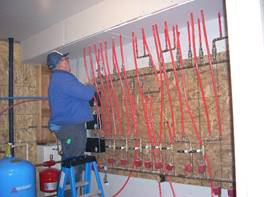since he knows every aspect of building. But he doesn’t charge much and is always having to replace tools and equipment, so our tax man told us that Ken went into the hole over $6,000. last year on this business. Some of that was the depreciation of his trailer, but since it is hard work and Ken is 69 now, it is hard, and he comes home so tired and hurting all over, and it’s not worth it when you lose money instead of making money so he has decided to give it up. Handyman jobs were also frustrating (as you know) because of past work done on homes by contractors or carpenters, electricians or plumbers who didn’t care and just did the work any old way. With Ken being a perfectionist, that was hard for him.
He still wants to keep busy and we need the money, so he is in training to be a school bus driver. Ken is a really good driver, but I hope he has enough patience with the school children. He will have to develop it as they have told him he can’t touch any of them, or look angry as they take pictures with their cell phones (older kids). He seems to be enjoying the training and learning a lot – guess we’ll see how it goes. He hasn’t done this before. Ken is a great school bus driver because he is a great driver. I have always felt confident when riding with Ken, and much better than when I am driving myself. He is good with the children and youth and he commands their respect. Everyone at the Transportation Department likes him as he is dependable, keeps his bus clean and maintenance done when it needs it, is fair with the children and others, etc. He enjoys it for the most part and they just made him the employee of the month (Jan 2013) for the transportation dept
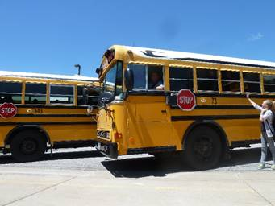 Ken is a very good school bus driver. I knew he would be able to handle the bus really well as he is an excellent driver, but I wondered about his patience with the kids, but he is doing great. If he has any problems, he just pulls his bus over and talks to me and they settle down. Ken is always amazing to me how he can do just about anything. He has great talents and abilities. I could never be a school bus driver as I don’t have confidence in my driving and to drive a big vehicle like that would scare me to death, especially with worrying about the safety of the children. I love secretarial work and I’m glad that is what I have been able to do part of the time during my life.
December, 2008
Last year we were in sunny Arizona with our daughter, Shellie, and her family for Christmas and the month of January. It seemed crazy to be playing miniature golf, riding in paddle boats and enjoying the Phoenix Zoo during the holidays. We were invited there again this year, but decided to wait and go in the spring since we have five of our six children living within an hour’s distance from us and it’s fun to be with them and their families for Christmas Eve and Christmas day also. Besides, Shellie and Roy’s youngest son, Jase, will be baptized next spring and we want to be there with him and his family at that time
.
We’ve had several additions to our family this year. Our youngest son, Jeff, and his wife, Gail, had a beautiful baby daughter, Rachel, born to them on February 12th, and the next month, our oldest grandchild, JaNae, (Sandi’s daughter) gave birth to a beautiful baby daughter, Emma, on March 10th.
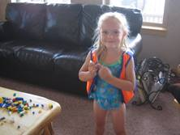On the 26th of October, our son Scott, and his wife, Mishelle, had twins born to them. Kaden was born first and weighed 5 lbs, 14 ozs and his sister, Kaitlyn, weighed 5 lbs, 8 ozs. When Scott & Mishelle told their older children, Kylan and Ashley, that they were having twins and that one was a boy and the other was a girl. Ashely, age 6, wasn’t surprised. She said “I know, I prayed to Heavenly Father for that. If the baby was a girl, Kylan would be sad not to have a brother and if it was a boy, I would be sad not to have a sister – so we needed one of each.” I know that Ashley received this blessing from the Lord too. That makes 19 grandchildren for us and 5 great-grandchildren which includes a step great-grandson. They are all very special and we are so thankful for each of them.
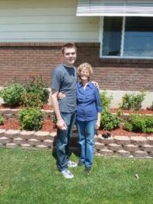 Shellie and Roy’s oldest son, Garrett, left for his mission in August. He was called to serve in the Kennewick Washington Mission. Ken and I flew down to Arizona to help Shellie with the preparations for an open house they were giving him and to hear him speak in Sacrament meeting. Ken and Roy also were able to be in the circle when the Stake President set Garrett apart as a Missionary for the Church of Jesus Christ of Latter Day Saints. The next morning, we flew home. Garrett’s other grandparents, Veldon and Patsy Seymore, had just finished their mission at Martin’s Cove in Wyoming. On their way home they stopped at our place. That evening the four of us drove down to the Salt Lake Airport to meet Garrett as he flew in to report to the Provo M.T.C. We brought Garrett back to our place for the night. The next morning the four Grandparents had the privilege of taking our Grandson to the MTC. It was a wonderful experience. Garrett is a great young man and from the letters we are receiving, he loves his mission.
We enjoy being with our special family and were able to have several snowmobiling, fishing and camping trips this year with them and lots of family dinners and activities. I wrote up our Snowmobiling trip with Sandi & Nick at the Trail Canyon Lodge for Ken’s birthday 2008. His birthday is the 27th of February.
Ken and I went to Payson Lake to camp for a few days before going on down to Zion Canyon where we would meet up with Jeff, Gail and family the last of September.
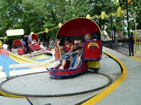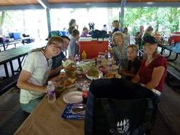 Shellie & her family come up each summer and we always have a great time. Her siblings and their families join in on the activities and trips. We usually always have a family barbecue at our home. One time we had a family breakfast of biscuits, gravy, bacon & eggs, in our back yard. It had been a tradition to have Ken make biscuits & gravy for our family. Everyone loves them. We also go to Lagoon for one day and sometimes get the “bounce back” ticket and go back the next day. I have gone with them most years and love being with this special family and having fun with them on the rides, and enjoying the beauty of the flower gardens and trees that are there.. Ken doesn’t love Lagoon, but sometimes would come in the evening to have the picnic dinner with us and then walk around pioneer village, have an ice cream cone and then go watch the good entertainment that was there at that time. Ken and I love having Shellie & her family here with us, but sometimes they go stay with her siblings for a day or two also.
For several years I have purchased a Grandmother’s yearly pass to Dinosaur Park in Ogden and enjoy taking the grandchildren there throughout the year.
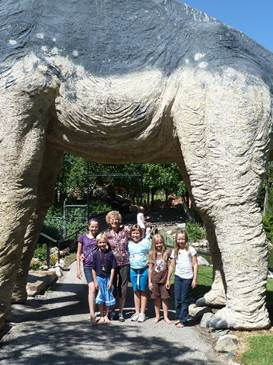 I started doing this when David and Taylor Paige were young. They were about 7 and 9 years old, I think. I took all the grandkids there usually at least once or twice a year. I usually just took one family’s children at a time, but as they got older, sometimes I would take cousins. In our Buicks, I could take 5 grandkids, but now in our Chev Impala, I can only take four. Most of these grandchildren love to go there, even when they are teenagers. I mentioned that to Shauna, one day, and she said it was mainly because they wanted to spend time with Grandma. Her comment made my day. I love to be with our children too. Ken went a couple of times with us, but he was usually working or doing projects for us or other family or friends. Dinosaur Park is a fun place, especially for younger children. They have a great museum where all kinds of Dinosaur skeletons are displays on the main floor and upstairs they have displays of all different kinds of rocks made into jewelry or other items. They also have an area upstairs where they have robot dinosaurs that growl and move somewhat. The children love this area. Outside is lots of paths which take you to different full-size manmade dinosaurs, they growl too. They also have a playground made up of manmade dinosaurs, etc. They have an area where you can dig for bones – actually use brushes to uncover dinosaur bones and eggs. Another area is where you overlook the pond and can buy food to feed the large fish, ducks & geese. They have other hidden paths, etc., etc. It is a fun place. I don’t know how many times I have been there, but it is still fun, especially to watch the grandchildren having such a good time. We usually take our lunch and treats as there are picnic areas all around. They also have a gift shop and snack bar. The gifts are too expensive, but I usually buy the grandchildren a ice cream treat, just before leaving to go home.
We always have a family Christmas party, but last year we also had our first “Grandchildren’s Christmas party”. I got the idea from Sister Hinckley’s book about her life (can’t remember the name of the book). I liked this idea so decided to try it. The first year I also invited our great grandchildren (Dawson, Kennedy, Emma, Jaden and Nathan) This was almost too many for me to handle, but I had Paige help me
We enjoy tending the grandchildren whenever possible and supporting them in their sports, academic, music and other accomplishments. It’s fun to be grandparents. Emily, David & Shauna’s daughter, will be baptized on the 6th of December. We look forward to that.
Ken and I decided it was too hard on him to continue doing handyman and remodeling jobs to earn extra money, so he started working for Davis School District last spring as a substitute school bus driver. He enjoys it. He doesn’t plan to apply for a regular bus route as he still wants time to go fishing, go to the temple, etc. Ken and I are the Family History Consultants for our ward. We work at the Family History Center in Clearfield on Tuesday nights and are learning a lot and enjoying it. We keep really busy with family and Church, but we have a good life. We are thankful for our family, extended family and good friends, and especially for the gospel of Jesus Christ.
2008 UPDATE:
Ken has been in construction work for many years. Since he retired, he has been doing handyman jobs since he knows every aspect of building. But he doesn’t charge much and is always having to replace tools and equipment, so our tax man told us he went into the hole over $6,000. last year on this business. Some of that was the depreciation of his trailer, but since it is hard work and Ken is 69 now so it is hard and he comes home so tired and hurting all over, and it’s not worth it when you lose money instead of making money so he has decided to give it up. Handiman jobs were also frustrating (as you know) because of past work done on the home by contractors or carpenters, electricians or plumbers who didn’t care and just did the work any old way. With Ken being a perfectionist, that was hard for him.
He still wants to keep busy and we need the money, so he is in training to be a school bus driver. Ken is a really good driver, but I hope he has enough patience with the school children. He will have to develop it as they have told him he can’t touch any of them, or look angry as they take pictures with their cell phones (older kids). He seems to be enjoying the training and learning a lot – guess we’ll see how it goes. He hasn’t done this before.
Tuesday, May 6, 2008 – Ken keeps really busy, but helps others - Virginia Johnston today
Ken has been really busy the last while (although he usually keeps really busy as everyone wants him to help them with one project or another, since he knows how to do everything). Now he has been training to be a bus driver. Since he is getting older (69 now), he gets tired easier and gets in pain if he works too hard or too long or if the project is stressful – so he has decided he wants to phase out of doing construction jobs except just for our immediate family, and Bob since we live here. Although, he will help others in an emergency, if needed, I’m sure.
We can’t make ends meet just with our social security checks & my small retirement check, so he needs to bring in extra money some way, so he decided to be a school bus driver. He applied and they need bus drivers, so they were excited to have him. The training has been lengthy and several tests, but he has completed them. He is to work as a substitute for 6 months and then he can apply for his own bus route if he chooses to.
Anyway, my brother, Bryce and his wife, Deanna, brought a home in Perry, but it needed a lot of work done to it, so Bryce asked Ken if he would help him. My sister, Georgia and her husband need him to help them do a project, our son, Scott and wife, Mishelle, need him to fix their bathroom, my cousin, Randy needs him to do projects on remodeling their home, etc., etc.
On Tuesday, after morning school bus training, he had planned to go to Bryce’s home to work there again, but realized he wouldn’t have enough time as we had a meeting that evening with the High Priest Leader in our ward about family history work, so he worked on projects for Bob & Mark on the yard and garden. While we were eating supper, a neighbor called and asked if he would go to Sister Virginia Johnston’s home and install some hand safety railings in her shower for her. The neighbor explained that he didn’t have time and she needed it done right away. Ken accepted, and we stopped at her home on our way to the meeting to see what it entailed. After the meeting, Ken asked if I would go with him to Virginia’s home while he installed them. I had hoped to stay home and do more on-line training on the internet since Irven & Sandy had been to our home all day while we cooked a meal in our solar oven. They hadn’t planned to be there all day, but her and I kept visiting about different things and the day was gone. Time sure flies by so fast. I started to object about going with him but then I realized that it was hard for him to spend the time doing this for her, since he was tired from working so hard all day, but he was willing to do it and besides it wasn’t appropriate for a man to go into a single woman’s home alone. Virginia was a widow – so I went with him. I was glad I did because as I visited with Virginia, she told me several spiritual experiences she had with raising her family. I felt the spirit and my love and admiration for this special lady and her family grew in my heart. I felt the Lord gave me this blessing since I was willing to go with Ken. Virginia was happy for my visit too.
May 2008 - Dentist
I went to the dentist in May for a checkup and to have them cleaned. I found out after I got there that Dr. Cottle had retired and a new young dentist was taking his place. They took x-rays and the dentist told me that the roots of a tooth on the back top right side were crumbling and because I had had a root canal in that tooth, I couldn’t feel any pain. He said the tooth couldn’t be saved and I would need to go to an oral surgeon to have it pulled as he didn’t have the equipment needed to get it out. He also said I had a cavity which needed filling and that I needed three new crowns in order to save those teeth. They gave me a paper itemizing the cost of the work which needed to be done and it was $3,000.00 plus the cost of the oral surgeon. Each crown was $670.00 plus $150.00 for some other procedure they do with crowns. Needless to say, I was pretty discouraged when I left that day as $3,000.00 is a lot of money even in today’s world, and we don’t have any dental insurance. They wanted to make an appointment for me to have the work done, but I decided to call other dentists and get a second opinion.
I did make an appointment with the oral surgeon. I was nervous about going there since the dentist said the roots were crumbling, I knew he would have to dig them out and it would be a painful and stressful experience. I prayed hard to Heavenly Father that the tooth would come out ok and to bless the oral surgeon as he took it out. He deadened all around the tooth and I felt it being numbed even up into my right eye. When he pulled the tooth, it came out all intact. I was surprised and asked him about it and he showed me the tooth. I told him Dr. Harris had told me the roots were crumbling. He said I know, I am very surprised myself. I knew my prayers had been answered. I got along great and didn’t even have to take a pain pill that he prescribed. I only took Tylenol. Mark Hulet, Ken’s cousin, had been a dentist and he kept asking me how I felt and how I was doing. He was surprised that I was doing so well. Ken had been with me as he wanted to know how the oral surgeon felt about me having dentures instead of having all this work done since my teeth have always been soft and I have always had so many cavities, caps, bridges, root canals, crowns, teeth pulled, paradonels disease, etc., and I take fairly good care of my teeth. We have spent a lot of money on my teeth, plus what the insurance would pay. I always liked Dr. Cottle, but I don’t think he took as good of care of my teeth as he should as prior to going on our mission to the Philippines, Dr. Cottle had checked my teeth and said they were good. But soon after I got there I had an abscessed tooth and had to go to a dentist that the mission president referred me to in Angeles. She did a lot of work and also had to put on three crowns.
Now here we are again. The oral surgeon told me that if he were me, he would have the new crowns put on and keep my teeth as long as I can. He said “If you even decide to have dentures, only do it on the top as you have a ridge on the bottom and the dentures would slide back and forth and wouldn’t work. I had other dentists tell me that since I had had paradonal’s disease my gums would never adjust to dentures and I would be miserable.
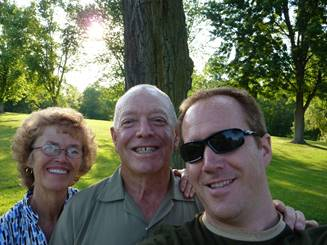Vacation to be with Jeff in Greenville Ohio, Nauvoo, Illinois and Kirkland, Ohio in July of 2008. Jeff had transferred with his job to Greenville, Ohio when he and Gail separated. Ken and I wanted to go visit him there and he wanted us to come so we went in July of 2009. We have always wanted to go to the church history sites back there – Nauvoo, Illinois and Kirkland, Ohio so we talked to Jeff about it and he said we could use his car and he would just ride his bike back and forth to work.
Bear Lake for family vacation in 2008
We had a family vacation at Bear Lake and we took our boat and Big Mable (our water toy) and David & Shauna brought their boat, so we all had a great time, fishing, water skiing or playing on Big Mable & other water toys. .
Shellie came up to Utah. She comes every summer. She usually brings her sons and we all go to Lagoon for a day and sometimes two days. Sometimes Roy comes with them, but he usually stays home as he needs to work. We have family vacations, barbecues with volley ball in our Clinton back yard, etc. We have had a few “Girl’s day or nights out”.
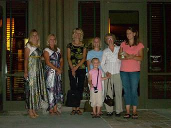Girl’s day and night. This year we decided to meet in Salt Lake for dinner and then go shopping (or window shopping) at a fun mall. Afterwards, we stayed at a motel for the night and left the next morning. As I remember it, Becky came for the dinner in Salt Lake, but then she needed to leave.
The rest of us (Shellie, Sandi, Shauna, Mishelle and Gail) went to the mall and then to the motel. It had been really great and I enjoyed being with my daughters and daughters-in-laws. But, at the motel, we started visiting. It was good at first, but then Shellie & Sandi started telling about experiences growing up. I don’t remember what was said, but especially, Shellie, said some hurtful things about me and her dad. The others didn’t appreciate what was said, and neither did I. Finally, Sandi stopped it and came over and apologized to me. I don’t think Shellie did. Shellie is a wonderful daughter and an amazing wife, mother & friend. She is very talented and goes the extra mile in doing things for others. Sandi is this way also. But this night I was disappointed in my girls, especially Shellie. Shellie says things sometimes, that if she thought before she spoke, I don’t think she would say some of the things she does. David told me later, that Shauna said she would never go on an overnight “Girl’s Night” again. She was very upset about what took place at the motel
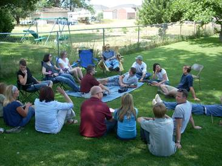Browning (Irven’s and our families) barbecue at our Clinton Back Yard.
Irven & Sandy had been telling us that their children and families hardly ever get to see their cousins, and their children wanted us to all get together. Doug and his family were down visiting in Utah, and Shellie & her boys were here, so we decided to have a barbecue on a Saturday afternoon. It turned out really fun. They all enjoyed visiting and getting reacquainted with each other. I think all of Irven & Sandy’s children and families were here and I think ours were also. We had another Browning/Young barbecue in our Clinton back yard, and it turned out great also. Most of Irven’s and our families were here, and Bob & Carroll’s family - Bruce and many of his family came, as well as Robert’s family. Grant works on Saturdays, so don’t think he and Stacey were able to come. It seems like Kathy was up visiting, so was here, and also Sherry and her family
Ken & I also hosted a Porter Barbecue one Saturday afternoon & evening . Most of Bryce’s, Georgia’s, Kim’s and our family were here, as well as Maleah representing Terry’s family as they live in Alaska, but Maleah lives in Idaho, and she comes to all of our family activities if she possibly can. Everyone brings their own meat to grill, plus a pot luck dish to share. We eat, visit and then many play volleyball and some of the ladies sit around and visit while watching the game, or watching the children play together. (not sure what years these other family barbecues were)
We hosted a couple of High Priest parties here in our back yard also and they turned out great!
I am thankful we have this big, nice backyard where we can hold these parties and activities.
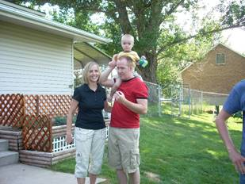We have a large back yard, but we have a small home. We have a living room, sun room, nice kitchen and 3 bedrooms, but only one bathroom. We can’t hold more than one family, during the winter, when we have family dinners, but that’s okay as we get more time with that family. Once in a while, we invite two families but then we are crowded. We love our family and love to be together as often as we can. Here is a picture of Mike & Becky’s family when they came. We usually play games after dinner. From left to right is: Paige, David, Mike, Maddy, Becky holding Jessie and Ken. I’m taking the picture.
The other picture is of Jeff, Gail & little Ben at one of our family barbecues in 2008. Boy, we surely have to enjoy these grandchildren while we can, as they grow up so fast.